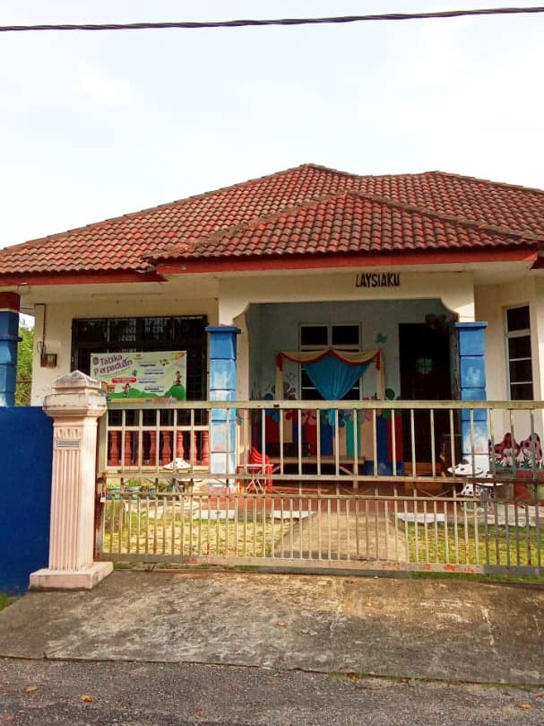
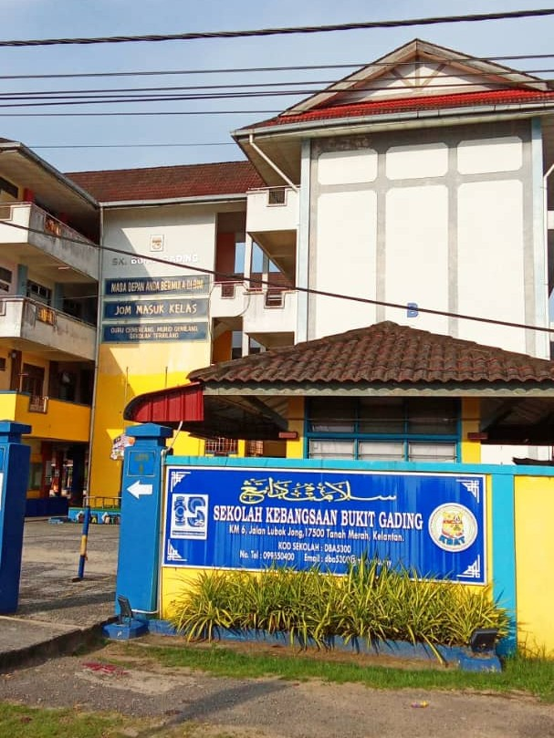
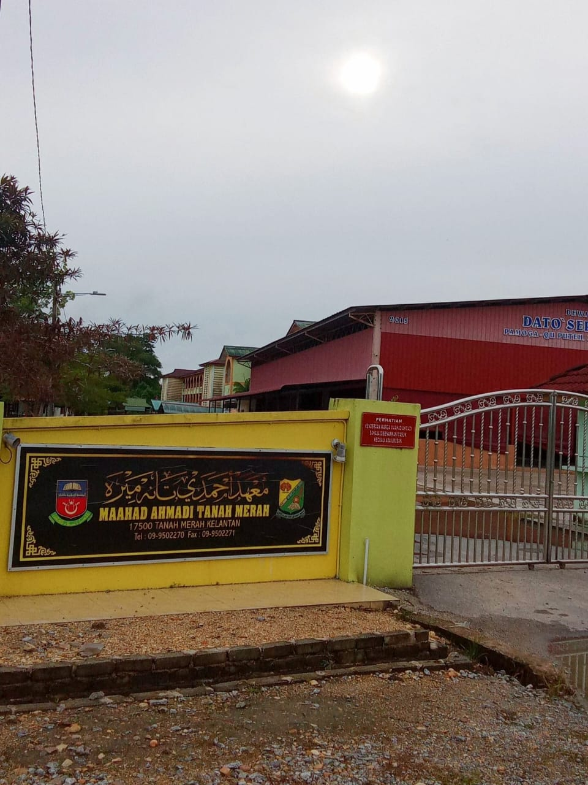
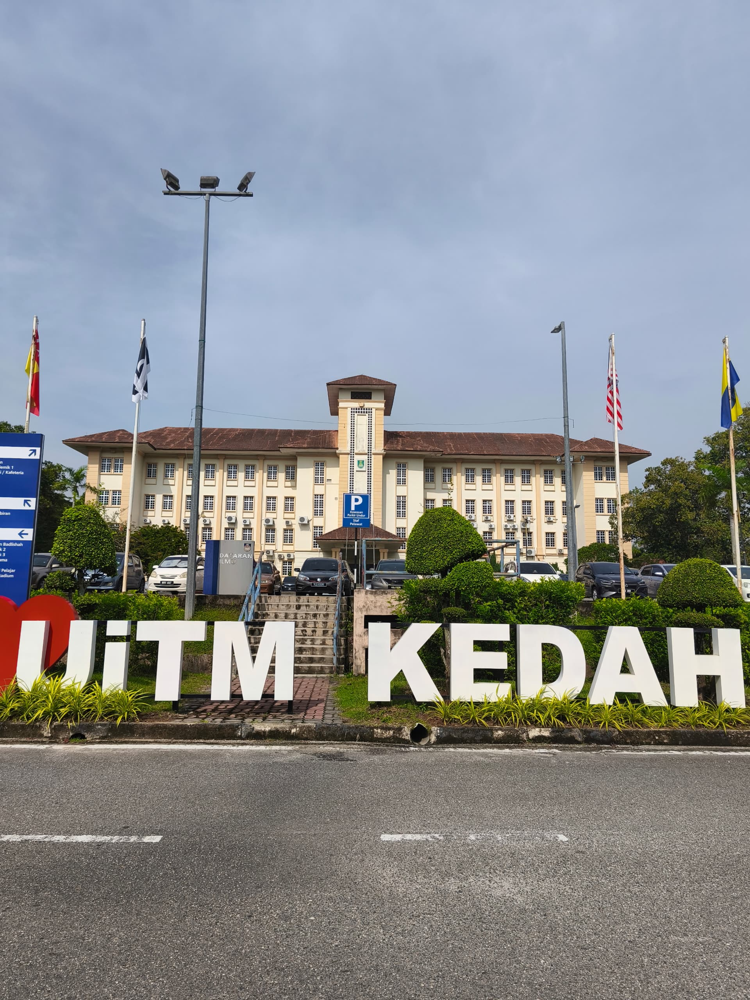

My Academic Path
Kindergarten
I went to kindergarten at Tabika Chawas in Tanah Merah, Kelantan. It was just a 3-minute ride by motorcycle from my house, which made it easy for my parents to send and pick me up every day. I still remember how nervous I was on my first day, holding my mother’s hand tightly, not wanting her to leave! But soon, I made friends and started looking forward to school every morning.
One of my favorite activities back then was coloring and drawing. I could spend hours with my crayons, filling in pictures or creating my little artworks. It always made me happy when my teachers praised my drawings and pinned them on the classroom board. I also loved singing, especially during Upin Ipin's opening song part, and playing outside on the slide and swings during break time.
But one moment I’ll never forget was when I got chosen to dance during a school performance. Instead of feeling excited, I was so shy and nervous that I burst into tears in front of everyone! I didn’t want to be the center of attention, and all I wanted was to hide behind my teacher. Looking back, it’s a little embarrassing but also kind of funny. It was one of those childhood moments that helped me slowly come out of my shell.
Kindergarten was where I first learned to be independent, make friends, and enjoy the learning process. It may have been a small start, but it was a big step for little me.
Elementary School
I attended Sekolah Kebangsaan Bukit Gading in Tanah Merah, Kelantan, which was just a short drive, only ten minutes from home. Those six years were filled with meaningful experiences and beautiful memories. I still remember walking into class as a shy little girl, unsure of what to expect, but slowly finding my rhythm and confidence.
I had a wonderful group of friends back then were Nureen, Sofea, Nadhirah, Adlien, Ainin, and Nabihah. We were inseparable, always sitting together during recess, sharing our food, and playing games after school. Our laughter filled the hallways, and those friendships made every school day brighter.
During my time in elementary school, I discovered that my favorite subject was English. I loved learning new words, writing stories, and speaking in class; it felt natural and fun to me. I also enjoyed reading English books and watching shows that helped me improve my vocabulary. English quickly became the subject I looked forward to the most.
When I was in Darjah 6 (12 years old), I took the UPSR examination. I studied really hard, aiming for straight A's. Even though I didn’t achieve that goal, I was still proud of my results, which are 3 A's and 3 B's. What made me happiest was getting an A in Mathematics, a subject I had worked so hard to improve in. That experience taught me that success isn’t always about being perfect; it’s about doing your best and learning from your mistakes along the way.
Elementary school was more than just learning from books; it taught me the value of friendship, the importance of hard work, and the importance of believing in myself. It’s a chapter of my life I will always cherish.
Secondary School
I attended Sekolah Menengah Agama Maahad Ahmadi Tanah Merah Kelantan, where I spent my secondary school years learning, growing, and discovering who I wanted to become. The transition from primary school was a significant step; everything felt more serious and disciplined, but over time, it became a place where I felt truly connected.
Throughout those years, I built meaningful friendships and shared many memories with my classmates. Whether it was studying together, preparing for school events, or simply talking after class, these moments made school life special.
My journey took an unexpected turn during the COVID-19 pandemic, when the PT3 examination was cancelled. It was a confusing time, filled with online classes and self-study, but it also taught me how to be adaptable and independent in my learning.
When SPM finally arrived, I gave it my best. I was proud to score 4 A’s, 3 B’s, and 2 C’s — a result that reflected all the hard work and effort I had put in despite the challenges. It reminded me that success isn’t always about being perfect, but about staying committed and pushing through.
More than just academics, Maahad Ahmadi taught me values like discipline, responsibility, and the importance of faith. It’s a time in my life I will always look back on with gratitude and pride.
University
I am currently in the midst of my university journey, studying at Universiti Teknologi MARA (UiTM) Kedah. I'm enrolled in the Informatics Library (IM144), and I’m currently in my 4th semester.
This journey has been full of exciting discoveries, challenges, and growth. At first, stepping into university life felt overwhelming, but as time went on, I began to adapt and find my own pace. Each semester has taught me something new, not just academically, but also about myself.
I’ve made wonderful friends here and shared countless memories through group assignments, late-night study sessions, and campus events. These experiences have helped me build confidence and strengthen my communication skills.
Studying in the Informatics Library has been an eye-opening experience. I’ve developed a strong interest in digital libraries, metadata, and how technology supports the organization of knowledge. Each course offers new insights that shape my understanding of the field and my future career path.
Even though I’m still finding my way, I’ve learned to embrace the journey. University life is not just about getting good grades; it’s about discovering who you are, growing from your experiences, and preparing for what’s ahead.